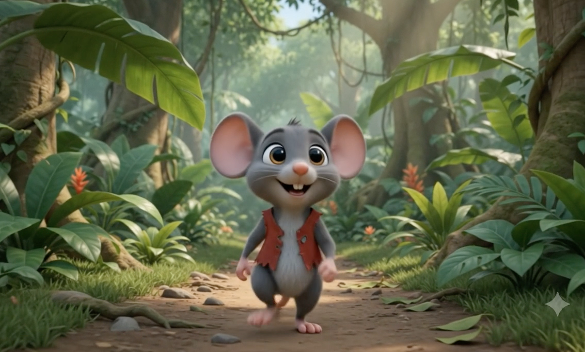
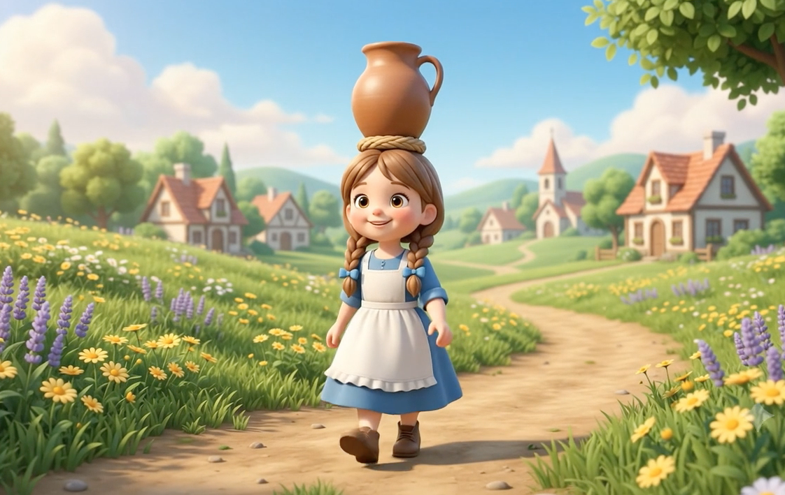
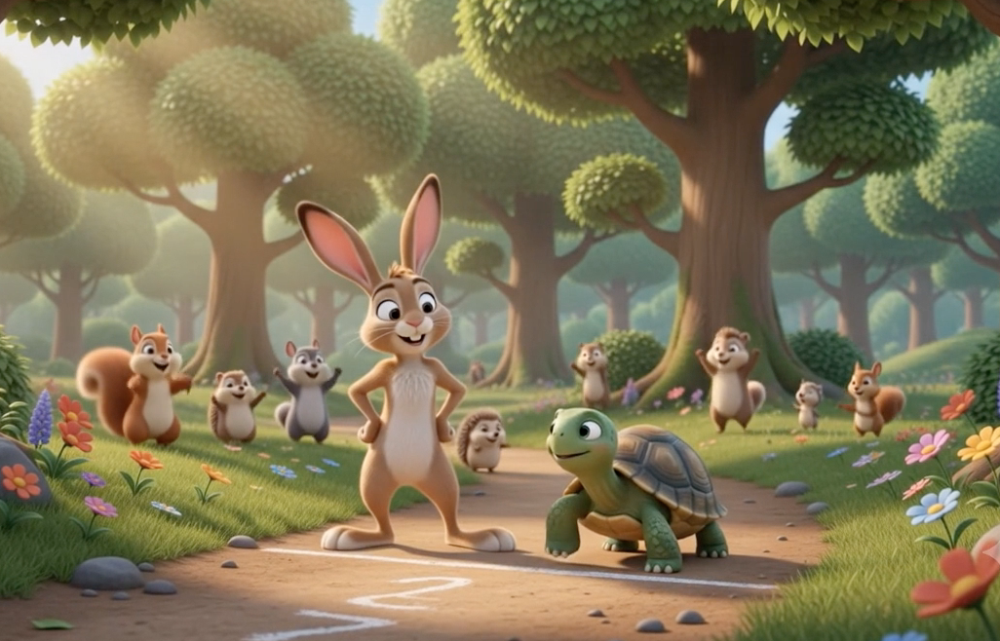
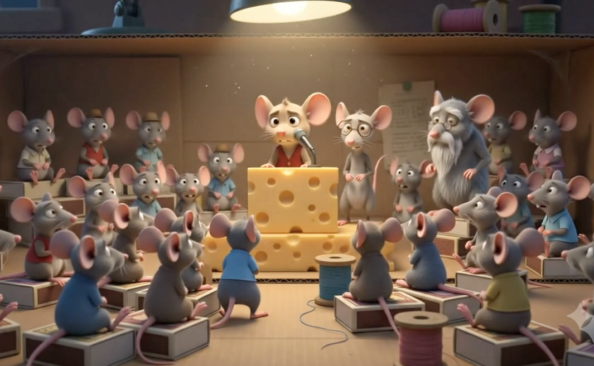

Selecciona un Videocuento

El León y el Ratón

La Lechera

La Liebre y la Tortuga

El Congreso de los Ratones
⬅️ Regresar a Menú Principal
Título del Cuento
Tu navegador no soporta la reproducción de videos.
⬅️ Regresar a Videocuentos